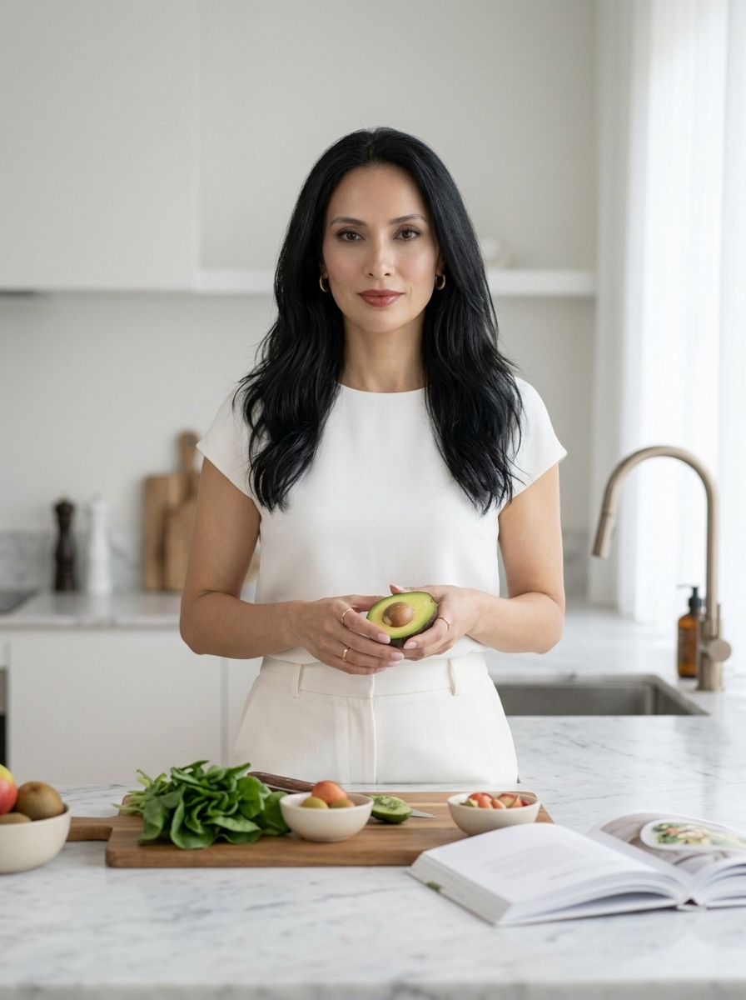
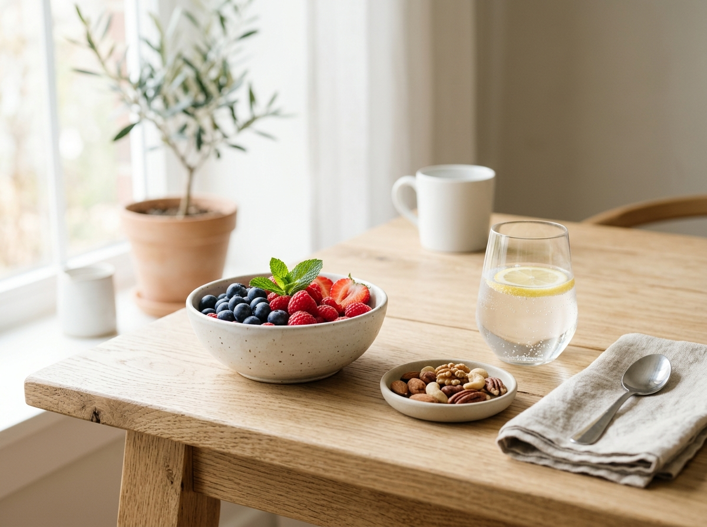

Nutrição que cabe na sua rotina.
Resultados que fazem sentido para você.
Emagrecimento feminino com acompanhamento nutricional individualizado, sem dietas impossíveis e sem abrir mão de comer bem.
Aprenda a construir uma alimentação equilibrada, melhorar sua relação com a comida e alcançar seus objetivos de forma sustentável.
Atendimento presencial e online
Você não precisa começar outra dieta. Precisa de uma estratégia que funcione para a sua vida.
Talvez você já tenha tentado várias dietas, passado períodos restringindo alimentos e até conseguido emagrecer, mas acabou voltando aos hábitos antigos.
Na consulta, o objetivo é entender o que está dificultando sua evolução e criar um plano alimentar que considere sua rotina, seus horários, suas preferências e seus objetivos.
- Sem cardápios impossíveis de seguir.
- Sem culpa por sair da dieta.
- Sem precisar viver em função da alimentação.
Um acompanhamento Pensado para você
Cada pessoa possui uma rotina, necessidades e objetivos diferentes. Por isso, seu plano alimentar também deve ser individual.
Avaliação individualizada
Entendimento dos seus hábitos, rotina, objetivos e principais dificuldades.
Plano alimentar personalizado
Estratégias práticas para você conseguir manter uma alimentação equilibrada no dia a dia.
Acompanhamento próximo
Ajustes durante o processo para acompanhar sua evolução e tornar a estratégia cada vez mais adequada à sua realidade.
Educação nutricional
Você entende suas escolhas e aprende a tomar decisões melhores mesmo quando está fora da rotina.

Para quem é o acompanhamento nutricional? O acompanhamento é indicado para mulheres que:
- Querem emagrecer sem recorrer a dietas extremamente restritivas
- Estão cansadas do efeito sanfona
- Têm dificuldade para manter uma rotina alimentar
- Querem melhorar a qualidade da alimentação
- Sentem falta de energia no dia a dia
- Precisam de mais organização para comer melhor
- Buscam uma relação mais tranquila com a comida
Emagrecimento sustentável
Estratégias alimentares que você consegue manter no longo prazo.
Mais disposição
Uma alimentação adequada pode contribuir para uma rotina com mais energia e bem-estar.
Mais organização
Aprenda a planejar suas refeições sem precisar passar horas preparando comida.
Mais autonomia
Entenda como fazer boas escolhas no restaurante, no trabalho, em viagens e nos momentos de lazer.
O passo a passo Como funciona a consulta?
Conhecemos sua rotina
Conversamos sobre sua alimentação, hábitos, objetivos e dificuldades.
Identificamos o que precisa mudar
Avaliamos seus hábitos atuais e definimos prioridades realistas para o seu momento.
Criamos sua estratégia
Você recebe orientações e um plano alimentar personalizado de acordo com suas necessidades.
Acompanhamos sua evolução
Nas consultas seguintes, avaliamos seus resultados e fazemos os ajustes necessários.

Um lembrete importante Você não precisa fazer tudo perfeito.
Precisa encontrar uma forma de se alimentar bem que consiga manter mesmo nos dias corridos.
O acompanhamento nutricional é para quem quer deixar de viver entre períodos de restrição e exageros e construir uma relação mais equilibrada com a alimentação.
Vamos começar?
Agendar minha consultaSOBRE A NUTRICIONISTA Prazer, eu sou Marina Duarte.
Sou nutricionista clínica com foco em emagrecimento feminino e acredito que cuidar da alimentação não precisa significar abrir mão da sua vida social, dos alimentos que você gosta ou transformar cada refeição em uma preocupação.
Meu trabalho é ajudar você a entender sua alimentação e encontrar estratégias que façam sentido para a sua rotina.
Mais do que entregar uma dieta, quero que você termine o acompanhamento sabendo fazer escolhas com segurança e autonomia.
DEPOIMENTOS O que minhas pacientes dizem
Pela primeira vez consegui seguir um plano alimentar sem sentir que estava vivendo de dieta. As mudanças foram acontecendo de forma muito mais natural.
Aprendi a me organizar melhor e principalmente a não achar que tinha estragado tudo quando saía da rotina.
A consulta foi muito mais do que receber uma dieta. Entendi onde estava errando e o que realmente funcionava para mim.
FAQ Perguntas frequentes
Sim. O acompanhamento pode ser realizado presencialmente ou de forma online, de acordo com sua preferência.
Sim. As orientações são definidas considerando seus objetivos, rotina, preferências alimentares e necessidades individuais.
Não necessariamente. A estratégia alimentar é definida de acordo com cada pessoa e não depende de eliminar grupos alimentares sem necessidade.
A proposta não é criar uma lista de alimentos proibidos. O objetivo é encontrar equilíbrio e desenvolver uma alimentação que possa ser mantida no dia a dia.
Cada pessoa responde de uma maneira. Durante o acompanhamento, avaliamos sua evolução e ajustamos a estratégia conforme necessário.
O PRIMEIRO PASSO Comece a cuidar da sua alimentação de um jeito diferente.
Você não precisa esperar a próxima segunda-feira para começar.
Agende sua consulta e dê o primeiro passo para construir uma rotina alimentar mais leve, equilibrada e possível de manter.